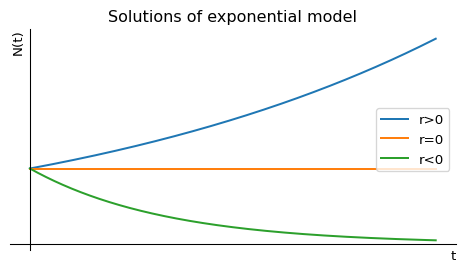
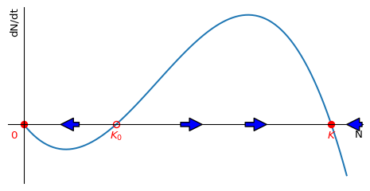

1 Continuous-time population models
Population dynamics is the study of how populations change over time. A population can be any group of individuals of the same species in a particular area, such as a population of bacteria in a petri dish, a herd of deer in a forest, the Cod stock in the Baltic Sea, or the human population of a country. Understanding how population size evolves is important in many fields, including ecology, conservation biology, epidemiology, and resource management.
To model a population mathematically, we introduce a function \(N(t)\) that represents the number of individuals in the population at time \(t\). We assume that at the starting time, which we take to be \(t=0\), the population has some initial size \(N(0)=N_0\).
Since the population size changes over time, we are interested in its rate of change, which describes how quickly individuals are added or removed from the population. There are several fundamental processes that affect population size:
- Births: New individuals are born into the population, increasing its size.
- Deaths: Individuals die, decreasing the population.
- Immigration: Individuals arrive from outside the population, increasing its size.
- Emigration: Individuals leave the population to settle elsewhere, decreasing its size.
These processes together determine the overall rate of change of the population, which we can express mathematically as: \[ \frac{dN}{dt} = \text{birth rate} - \text{death rate} + \text{immigration rate} - \text{emigration rate}. \tag{1.1}\] The idea behind this approach is that if we understand how the rates at which these processes take place depend on the population number \(N\), then we can find \(N(t)\) by solving the above differential equation. Different assumptions about how these rates depend on the population size (or possibly other factors such as available resources or competition) lead to different population models. In the following sections, we will examine some influential models that help us understand different population growth scenarios.
Learning Objectives
After completing this chapter, you should be able to:
- Mathematical Modeling
- Write down differential equations for population dynamics
- Identify and interpret key parameters in population models
- Solve basic population models analytically
- Model Analysis
- Sketch solutions of population models
- Find steady states of population models
- Determine stability of steady states
- Interpret phase line diagrams
- Predict long-term behavior of populations
- Applications
- Compare and contrast different population growth models
- Understand how density dependence affects population growth
- Analyze the effects of different harvesting strategies
1.1 Exponential model
This is the simplest and oldest model, introduced by Thomas Robert Malthus in 1798. If we assume that the per-capita birth rate \(b\) and the per-capita death rate \(d\) are fixed constants, then the general differential equation Eq. 1.1 becomes the linear equation \[ \frac{dN}{dt}=bN-dN=rN, \tag{1.2}\] where we introduced the new parameter \(r=b-d\). This equation is easy to solve: \[ N(t)=N_0\,e^{rt}. \tag{1.3}\] If the birth rate exceeds the death rate and hence \(r>0\), the model predicts exponential growth. In the opposite case of lower birth rate than death rate the model predicts exponential decay of the population number towards extinction. Only when birth and death rates are perfectly equal can the population stay steady over time. We illustrate that in Figure 1.1.
You may note that in this model \(N(t)\) can take on non-integer values, so strictly speaking it can not describe the number of individuals. When the population is large, this is not a big problem. You can simply round \(N(t)\) to the nearest integer without making much of a change. However if one wants to describe small populations correctly, one would have to switch from the deterministic differential equation to a stochastic process that models each birth and death individually. In these notes we will restrict ourselves to deterministic models.
Exercise 1.1 (* Immigration) Let us try to model the population of a country with currently \(N_0=70\) million inhabitants. Let us assume that the per-capita death rate is \(d = 0.015\) deaths per year and the per-capita birth rate is \(b=0.01\) births per year. In addition there is a constant rate of immigration of \(a=300,000\) individuals per year.
Write down the ODE for the population number \(N(t)\). At this point, do not use the numerical values yet but the symbols.
Solve the ODE for \(N(t)\) with the given initial condition. You may not have solved an ODE for some while so may need to look back at your Calculus notes. But don’t panic: the equation from part (i) should be a linear, non-homogeneous, first-order ODE with constant coefficients, so you definitely know how to solve it. The easiest way to go about it is to first convert it into a homogeneous ODE by shifting the dependent variable.
Substitute the numerical values to obtain the projected population after \(10\) years.
1.2 Logistic model
Exponential population growth can not be maintained for ever. There will be a limit to the size of population that an ecosystem can maintain. When the population gets closer to this limit its growth rate will decrease, for example due to competition for limited food sources or space, or due to disease. This decrease in the growth rate is captured by the logistic equation \[ \frac{dN}{dt}=rN\left(1-\frac{N}{K}\right), \tag{1.4}\] where \(K\) is the carrying capacity of the environment. The extra factor of \(1-N/K\) decreases the growth rate towards zero as the population number \(N\) approaches the carrying capacity \(K\).
In Figure 1.2 we make a plot of the right-hand side of the logistic equation Eq. 1.4 to see how the growth rate depends on the population number. While that figure was created by the computer, the plot is easy to sketch by hand because the function we want to sketch is simply an upside-down parabola. The maximum of the parabola is at \(N=K/2\) and the parabola crosses the \(N\)-axis at \(N=0\) and \(N=K\).
We see that the growth rate is zero at \(N=0\) and \(N=K\), and it is maximal at \(N=K/2.\) By realising that \(dN/dt\) is the slope of the graph of \(N(t)\) we can sketch a few solutions to the logistic equation Eq. 1.4 in Figure 1.3.
The logistic equation Eq. 1.4 can be solved analytically to give \[ N(t)=\frac{K}{1+\left(\frac{K}{N_0}-1\right)e^{-rt}}=\frac{N_0 K e^{rt}}{K+N_0(e^{rt}-1)}. \tag{1.5}\]
Exercise 1.2 (Solving logistic equation) By using separation of variables and partial fractions, solve the logistic model Eq. 1.4 with initial condition \(N(0)=N_0\) to derive Eq. 1.5.
This exercise is for you if you like practising your skills at solving ODEs. The logistic model is one a the few non-linear models that can be solved relatively easily
1.3 Allee effect
Warder Clyde Allee (1885-1955) was an American ecologist who studied the effects of population density on the growth rate of a population. He found that in some cases the per-capita growth rate can increase with \(N\). This is called the Allee effect. It is not captured by the logistic model because there the per-capita growth rate decreases linearly iwth population size.
There can be several causes for an Allee effect. For example:
- In many plant species, pollination becomes less effective at low densities because pollinators are less likely to visit sparse populations
- Social animals like wolves hunt more successfully in packs, so individuals in larger groups have higher survival rates
- Colonial seabirds like puffins rely on large colony sizes for protection from predators
- Many marine broadcast spawners (like sea urchins or abalone) require sufficient population density for successful fertilization
- Small populations of endangered species may suffer from genetic inbreeding, reducing reproductive success
But even in the case of an Allee effect, eventually the population growth has to slow again as the population reaches the carrying capacity of the ecosystem.
Figure Figure 1.4 shows the per-capita growth rate as a function of the population number for exponential growth in black, for logistic growth in blue and two different growth rates exhibiting the Allee effect in green and red.
The green curve in Figure 1.4 shows a weak Allee effect, where the per-capita rate is small but positive for small population sizes, then initially increases with the population size before then decreasing again as the population approaches its carrying capacity. The red curve shows a strong Allee effect, which is similar but so strong that the growth rate starts out not just small but actually negative for small \(N\).
The simplest model for the Allee effect is the logistic equation with a modified growth rate that includes another factor that decreases the growth rate for small \(N\): \[ \frac{dN}{dt}=rN\left(1-\frac{N}{K}\right)\left(\frac{N}{K_0}-1\right). \tag{1.6}\] If \(0<K_0<K\), this exhibits the strong Allee effect because the growth rate is negative when \(N<K_0\). This means that the population will be driven towards extinction when it is below the threshold size \(K_0\) and it will grow towards its carrying capacity when it is above \(K_0\). This is illustrated in Figure 1.5.

This phenomenon is important for conservation biology because it means that small populations are particularly vulnerable to extinction. It is also important for fisheries management because it means that the population can collapse if it falls below a certain threshold size. The phenomenon is called “critical depensation”. We will meet it again when we discuss harvesting later in this section.
Exercise 1.3 (*Sketching solutions) Consider the population model with carrying capacity and Allee effect given by Eq. 1.6 with \(r>0\) and \(K>K_0>0\). Simply by considering the shape of the right hand side, sketch a graph with several solutions for different initial conditions. Choose two initial conditions between \(0\) and \(K_0\), two initial conditions between \(K_0\) and \(K\) and one initial condition larger than \(K\). Note that the graph only needs to be qualitatively correct, similar to the rough sketch for the solutions of the logistic model sketched in the first lecture. You are explicitly asked not to make the plot with a computer as in Figure 1.3.
1.4 General autonomous ODE model
The logistic model is a special case of a general autonomous ordinary differential equation (ODE) model \[
\frac{dN}{dt}=f(N),
\tag{1.7}\] where \(f(N)\) is a function of \(N\) only, not \(t\). The logistic equation Eq. 1.4 is an example of such a model with
\[
f(N)=rN\left(1-\frac{N}{K}\right).
\tag{1.8}\]
If \(f\) is Lipschitz continuous, then, given \(N(0)=N_0\), there exists a unique solution \(N(t)\) to the initial value problem Eq. 1.7. This is a consequence of the Picard-Lindelöf theorem.
We are interested in the steady states of the model, i.e. the values \(N^*\) for which \(f(N^*)=0\). These are the values of \(N\) for which the population number does not change. To determine the stability of the steady states, we can look near \(N^*\) by writing \(N(t)=N^*+n(t)\) with \(n(t)\) small. Then \[ \frac{dN}{dt}=\frac{dN^*}{dt}+\frac{dn}{dt} = f(N^*+n(t))\approx f(N^*)+f'(N^*)\,n(t). \tag{1.9}\] We now use that \(dN^*/dt=0\) and \(f(N^*)=0\) to find \[ \frac{dn}{dt}\approx f'(N^*)\,n(t). \tag{1.10}\] This is a linear equation for \(n(t)\) with solution \[ n(t)=n(0)e^{f'(N^*)t} \tag{1.11}\] and we can use the sign of \(f'(N^*)\) to determine the stability of the steady state:
If \(f'(N^*)<0\), then \(n(t)\) will decrease towards zero, and the steady state is stable.
If \(f'(N^*)>0\), then \(n(t)\) will increase away from zero, and the steady state is unstable.
If \(f'(N^*)=0\), then we need to look at higher order terms to determine the stability.
We illustrate this in the example of the logistic model. The fixed points are \(N^*=0\) and \(N^*=K\). The derivative of \(f(N)\) is \[ f'(N)=r\left(1-\frac{2N}{K}\right). \tag{1.12}\] So we find that \(f'(0)=r>0\) and \(f'(K)=-r<0\). This means that the steady state \(N^*=0\) is unstable and the steady state \(N^*=K\) is stable. This agrees with what we had already seen graphically in Figure 1.2 and Figure 1.3.
For a more detailed discussion of one-dimensional autonomous dynamical systems I recommend the first 50 pages of (Strogatz 2000).
Exercise 1.4 (+Von Bertalanffy growth) Assume the weight \(w(t)\) of an individual fish at time \(t\) is governed by the differential equation \[ \frac{dw}{dt}=\alpha\,w^{2/3}-\beta w \tag{1.13}\] with initial condition \(w(0)=w_0\) (the weight at birth), and where \(\alpha\) and \(\beta\) are positive parameters depending on the fish species.
Without solving the differential equation, just thinking about fixed points and their stability, determine \(\lim_{t\rightarrow\infty}w(t)\).
Derive the linear first order ODE for \(u=w^{1/3}\) and solve it.
Use the solution for \(u\) to find the solution for \(w\).
1.5 Harvesting a renewable resource
Ecologists model populations not only out of academic interest but also for practical purposes. Humans are interested in exploiting the natural resources. They want to harvest fish from the sea, to hunt deer in the forest, and to cut down trees in the jungle. These days they want to do this in a way that is sustainable, i.e. that does not lead to the extinction of the resource, while at the same time giving the highest yield.
My personal interest is in understanding how fish populations react to different kinds of fishing. I use coupled partial integro-differential equations for that purpose, but most fisheries management is based on simpler models and we get a good first idea by using the logistic model, which we will now modify to include harvesting.
1.5.1 Fixed fishing effort
We assume that in the absence of fishing the fish population number \(N(t)\) is governed by the logistic equation Eq. 1.4. We also assume that the fish are harvested at a rate \(E N(t)\), where \(E\) is the harvesting rate, which is determined by the effort that is put into fishing. This means that the rate of change in the fish population number is given by \[ \frac{dN}{dt}=rN\left(1-\frac{N}{K}\right)-EN = f(N). \tag{1.14}\] We can rewrite this equation in the form of a logistic equation with modified parameters: \[ \frac{dN}{dt}=rN\left(\left(1-\frac{E}{r}\right)-\frac{N}{K}\right) =(r-E)N\left(1-\frac{N}{K\left(1-\frac{E}{r}\right)}\right). \tag{1.15}\] This makes it easy to read off the fixed points \(N^*=0\) and \(N^*=K\left(1-\frac{E}{r}\right)\). The non-zero fixed point gets smaller when fishing effort \(E\) increases. This is illustrated in Figure 1.6.
We are now interested in finding out at what level we should fish in order to achieve the maximum sustainable yield (MSY). This is the level of fishing effort that gives the highest possible yield that can be sustained indefinitely. So we are interested in the yield at the non-zero fixed point \(N^*=K\left(1-\frac{E}{r}\right)\). The yield is the amount of fish that can be harvested per unit time, and it is given at the fixed point by \[ Y^*(E)=EN^*=EK\left(1-\frac{E}{r}\right). \tag{1.16}\] We can find the maximum of \(Y^*\) by differentiating with respect to \(E\) and setting the derivative equal to zero: \[ \frac{dY^*}{dE}=K\left(1-\frac{2E}{r}\right)=0. \tag{1.17}\] We can solve this equation for \(E\) to find the optimal fishing effort \(E^*\): \[ E^*=\frac{r}{2}. \tag{1.18}\] The resulting maximum sustainable yield is \[ MSY=Y^*(E^*)=\frac{r}{2}K\left(1-\frac{r}{2r}\right)=\frac{rK}{4}. \tag{1.19}\]
Exercise 1.5 (* Harvesting in Gompertz model) Consider a population \(N(t)\) that is described by the by the Gompertz model \[ \frac{dN}{dt} = \alpha N \log\frac{K}{N}, \tag{1.20}\] where \(\alpha\) and \(K\) are positive constants. You want to harvest this population, for example by hunting or fishing, with some effort \(E\). The rate at which you harvest individuals (which removes them from the population and hence results in an additional source of death) is proportional to the size of the population: \(Y = E N\). This is called the yield. Write down the differential equation for \(N(t)\) including this harvesting term. Determine the fixed points and their stability. Find the maximum sustainable yield, i.e., the maximum yield that can be sustained indefinitely.
1.5.2 Fixed fishing quota
Fisheries managers in the Mediterranean are aiming to control the fishing effort in order to achieve the maximum sustainable yield, and we have seen how to model that in the previous section. Fisheries in the North Sea or the North Atlantic however are instead managed by setting the total allowable catch (TAC) for the whole fleet. This is a fixed quota for the total amount of fish that can be harvested in a year. To model that policy we use the logistic equation with harvesting, but we replace the harvesting rate \(EN\) by a harvesting quota \(Q\): \[ \frac{dN}{dt}=rN\left(1-\frac{N}{K}\right)-Q. \tag{1.21}\] This is visualised in Figure 1.7.
We see that any non-zero quota leads to critical depensation, i.e., it introduces a critical threshold below which the population will collapse. This is a well-known problem in fisheries management, and it is the reason why the TAC is set to zero for some fish stocks. As the fishing quota is increased, the critical depensation threshold moves to higher population numbers and the stable steady state moves to lower population numbers. Eventually all non-zero fixed points disappear and the population collapses.
Exercise 1.6 (Harvesting with fixed quota in Gompertz model) As in Exercise 1.5, consider a population \(N(t)\) that is described by the Gompertz model. Imagine that this describes a fish population in a lake where fishing is going to be introduced, and that you are tasked with setting the quota that limits the rate at which the fishers are allowed to take fish out of the lake. The fishers demand that you set the quota to the maximum sustainable level. What is the maximum sustainable quota according to the model? Would it be wise to give in to the demand of the fishers and set the quota at this level?
Summary
This chapter introduced several key models for population dynamics in continuous time:
- Exponential Model
- Simplest model with constant per-capita birth and death rates
- Solution: \(N(t) = N_0e^{rt}\) where \(r = b-d\)
- Predicts unlimited growth (\(r>0\)) or decay (\(r<0\))
- Main limitation: Ignores environmental constraints
- Logistic Model
- Incorporates carrying capacity \(K\)
- Growth rate decreases as population approaches \(K\)
- Equation: \(\frac{dN}{dt} = rN(1-\frac{N}{K})\)
- Has stable equilibrium at \(N=K\) and unstable equilibrium at \(N=0\)
- Allee Effect Model
- Captures reduced growth at low population densities
- Strong Allee effect has critical population threshold \(K_0\)
- Below \(K_0\): population declines to extinction
- Above \(K_0\): population grows to carrying capacity
- Harvesting Models
- Fixed effort (\(E\)): \(\frac{dN}{dt} = rN(1-\frac{N}{K}) - EN\)
- Maximum sustainable yield at \(E = \frac{r}{2}\)
- Fixed quota (\(Q\)): \(\frac{dN}{dt} = rN(1-\frac{N}{K}) - Q\)
- Introduces critical depensation
- More risky management approach
- Fixed effort (\(E\)): \(\frac{dN}{dt} = rN(1-\frac{N}{K}) - EN\)
Key concepts:
- Population dynamics can be modelled by specifying the rates of change coming from processes such as birth, death, immigration, emigration, harvesting, etc.
- For autonomous models, one can make qualitative sketches of the solutions
- Steady states and their stability determine long-term behavior
- More realistic models incorporate density dependence
- Conservation and management strategies must consider population thresholds
- Choice of harvesting strategy has important implications for sustainability
Further exercises
Exercise 1.7 (Wasp model) In a colony of the European Hornet there is a single queen that produces all the offspring. It produces two kinds of offspring: workers and reproducers. We’ll denote the number of workers alive at time \(t\) by \(n(t)\) and the number of reproducers by \(N(t)\). The workers are responsible for collecting food. They can’t breed themselves and they die in the winter. However they are necessary to allow the queen to reproduce because without the food that they are collecting the queen would have nothing to eat. So we need workers. But because they die in winter, they don’t help the survival of the colony in the long run. That’s where the reproducers come in. They don’t do any work, but they can, if they survive the winter, breed in the next spring as new queens.
So the queen now has a strategy of how to proceed: It first of all needs to produce workers, and from time zero to time \(t_c\) it only produces workers. We assume that the birth rate is proportional to the number of workers, so that the total birth rate of workers is \(r n(t)\) for some constant \(r>0\). The queen then switches to producing only reproducers from time \(t_c\) up to the start of winter at time \(T\) and we assume that the total birth rate of reproducers is \(R n(t)\) for some constant \(R>0\). We also assume that until the start of winter there are no deaths.
What is the optimal time \(t_c\) at which the queen should switch from producing workers to producing reproducers in order to achieve the largest number of producers \(N(T)\) at the start of the winter and therefore to the largest number of wasps in the following year.
Exercise 1.8 (Wasp model with death) In the wasp example from Exercise 1.7, assume that the worker wasps die at a constant per-capita rate \(d\) but the reproducers do not die. Also assume that at time t=0 there is one worker, n(0)=1. Keep the birth rates as in Exercise 1.7. Determine the number of workers \(n(t)\) for any time between \(t_c\) and \(T\). Determine the number of reproducers at the onset of winter at time \(T\). Derive the optimal time for the switch-over time \(t_c\).
Exercise 1.9 (Conceptual Questions)
How does the logistic model address the limitations of the exponential model?
Why might a population exhibit an Allee effect? Give two biological examples.
Compare and contrast harvesting with fixed effort versus fixed quota. What are the management implications of each approach?
Under what conditions might the exponential model be appropriate, despite its limitations?
Strogatz, Steven H. 2000. Nonlinear Dynamics and Chaos: With Applications to Physics, Biology, Chemistry and Engineering. Perseus Books,U.S.